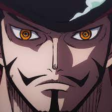

Dracule Mihawk là một thành viên trong Shichibukai - Thất Vũ Hải và cũng là người đầu tiên xuất hiện trong Shichibukai. Được biết đến với cái danh "Kiếm sĩ mạnh nhất thế giới"ông là người huấn luyện cho Zoro trong 2 năm Timeskip.
Mihawk là một người đàn ông cao to với mái tóc đen, râu ngắn và ria mép. Biệt danh "Mắt Diều Hâu"của anh xuất phát từ đôi mắt màu vàng kỳ lạ của anh, giống như đôi mắt của con chim ưng. Ông mặc một cái áo màu đỏ đen được thiết kế rất đẹp cùng với một sợi dây chuyền hình thánh giá, bên trong là một con dao. Nhìn ông giống với một kiếm sĩ từ Tây Ban Nha. Ông đeo một sợi kogatana xung quanh cổ, như một sợi dây chuyền thánh giá màu vàng. Ở ngôi nhà lâu đài của mình trên hòn đảo Kuraigana, ông có phong cách ăn mặc hoàn toàn khác, với một cái quần thể thao, một cái áo sơ mi không gài nút và cổ áo dựng đứng. Khi gặp Zoro bên ngoài, ông còn có một cái áo choàng màu đen choàng qua vai. 24 năm trước, trong cuộc xử tử "Vua Hải Tặc" God D. Roger, ông không có râu, không có nón, không có thanh Kokuto Yoru và tóc ngắn hơn bây giờ. Ông đã có mặt dây chuyền thánh giá vào lúc đó, và mặc một chiếc áo khoác có hoa trên đó. Lúc nhỏ, Mihawk có rất nhiều vết trầy xước và bầm tím trong quá trình tập luyện. Ông đã sử dụng một thanh kiếm gỗ làm vũ khí, mặc một chiếc áo khoác màu tối thả ngực, quần ngắn, giày và một cái thắt lưng màu sáng.
Giống như nhiều nhân vật khác ông cũng có hai kiểu cười khá độc đáo đó là Wahhahhahha và Kukukukuku. Dracule Mihawk là một trong những nhân vật quan trọng nhất trong các nhân vật trong One Piece; có một chút ngạc nhiên là: ông rất ít khi cười, và chỉ cười một lần duy nhất từ trước đến nay (Lúc Zoro nhận ông làm thầy). Ông không bao giờ tiết lộ cảm xúc của mình trên chiến trường, ngay cả khi ông bị chặn đòn tấn công lại.
Đúng như cái tên của mình “Mắt diều hâu” Dracule Mihawk có thị giác cực kì nhạy bén, ông có thể dễ dàng nhìn thấy tốc độ di chuyển của Luffy trong Gear 2, và tấn công với tốc độ cực kì chính xác, tạo ra một đường chém dài tới Luffy giữa một chiến trường hỗn độn của các hải tặc đến từ thế giới mới và hải quân. Ngoài ra, ông còn là một người thầy giỏi, lạnh lùng: sau hai năm dạy dỗ cho Zoro ông còn truyền đạt cho anh ta nhiều hơn những gì Zoro tự tập luyện trong nhiều năm trước đó. Ông là người duy nhất trong Shichibukai không ăn trái ác quỷ, sử dụng sức mạnh hoàn toàn của con người. Mihawk còn có thể đánh ngang sức với Tứ Hoàng Shanks Tóc Đỏ và còn có thể làm cơ thể của Jozu khi ở trạng thái kim cương hơi méo.
Kogatana là mặt dây chuyền hình thánh giá, bên trong là một con dao nhỏ dùng để phục vụ cho ăn uống hoặc đấu với những kiếm sĩ chưa đủ trình độ để đấu với ông. Điển hình khi đấu với "thợ săn hải tặc" Roronoa Zoro tại nhà hàng trên biển Baratie, ông đã dùng con dao Kogatana chặn 3 thanh kiếm của Zoro.
Yoru là một thanh kiếm có hình dạng giống thánh giá, lưỡi kiếm màu đen, to khoảng một người trưởng thành. Khi ở nhà hàng trên biển Baratie đấu với "thợ săn hải tặc" Zoro, cuối trận đấu chính Zoro đã giang rộng tay ra để Mihawk chém 1 nhát từ cánh tay trái xuống phần bụng, và đó cũng là động lực giúp Zoro tập luyện nhiều hơn để trở thành kiếm sĩ mạnh nhất thế giới. Ông đã nhận Zoro làm học trò ở tập 515.